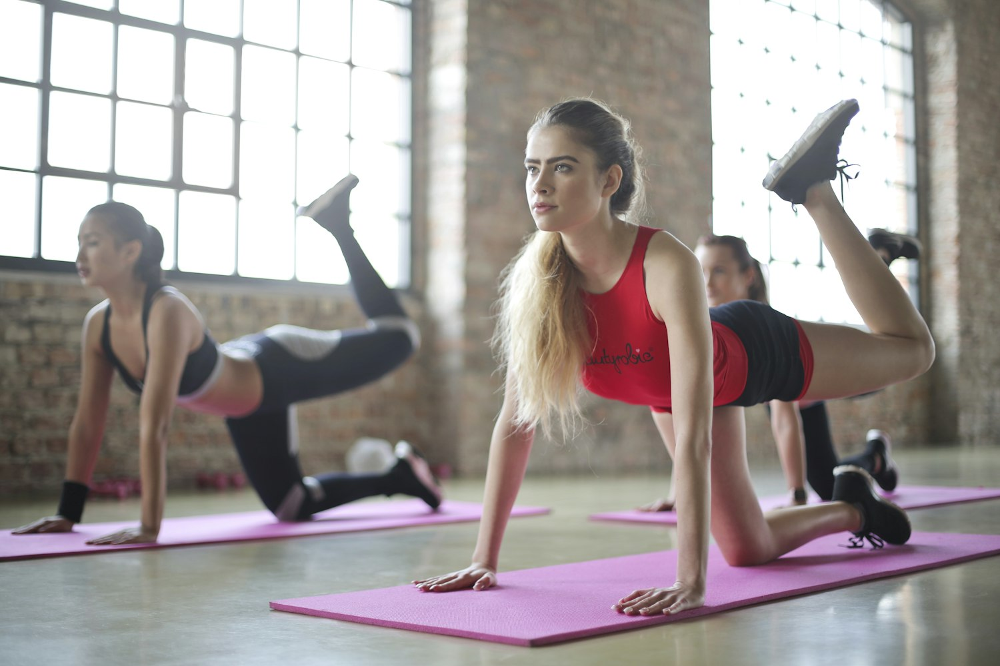
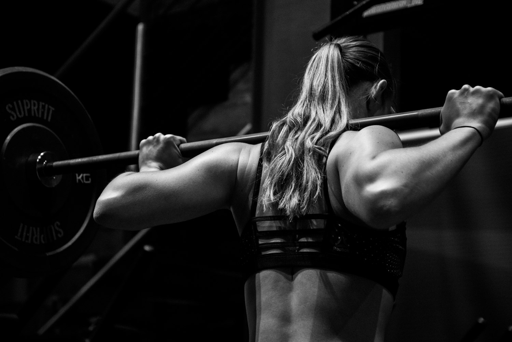
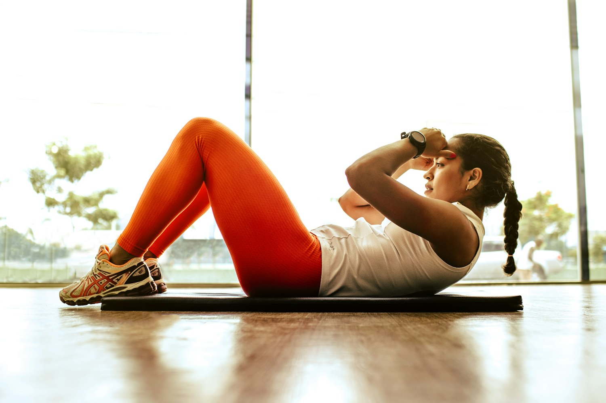
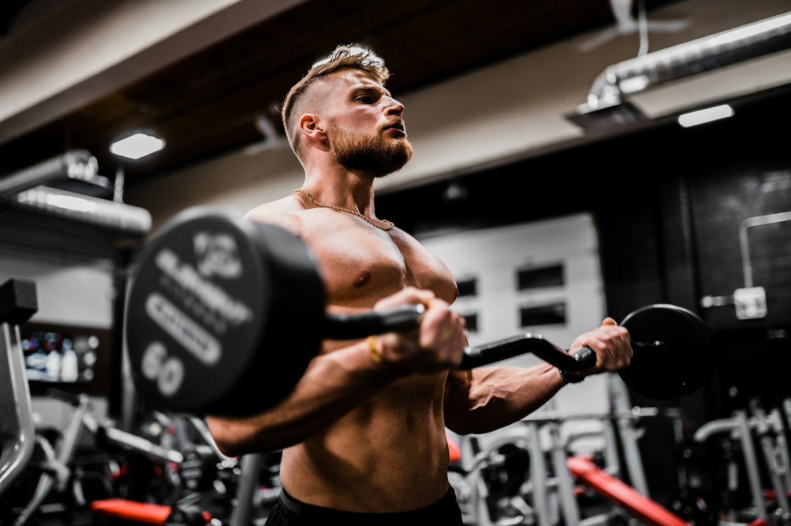
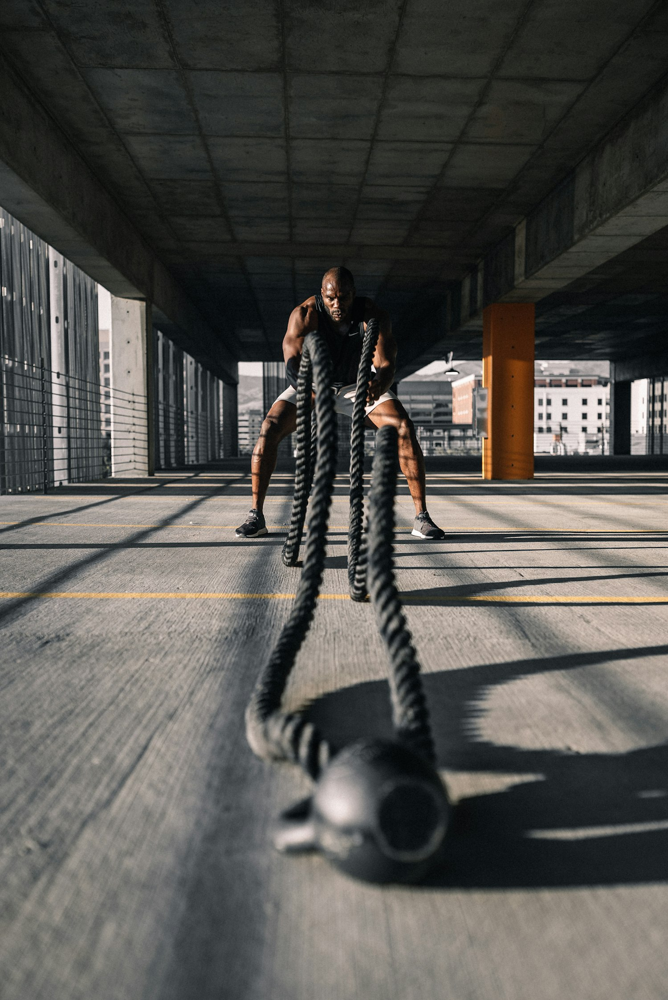

Persoonlijke fysiotherapie en revalidatie om snel en goed te herstellen.
Afspraak makenBel +31 55 323 2862Vakwerk waar je op kunt rekenen.
Behandeling op maat bij klachten, blessures of pijn.

Gerichte technieken voor nek, rug en gewrichten.

Begeleiding terug naar volledig herstel en conditie.
Een indruk van ons werk.


Wat klanten zeggen
"Top geholpen, echt een aanrader. Alles netjes en op tijd geregeld."
"Vriendelijk, vakkundig en een mooi resultaat. Zeer tevreden!"
"Fijne ervaring van begin tot eind. Kom hier zeker terug."

Met een persoonlijke aanpak helpen we je weer soepel en pijnvrij te bewegen. Afspraak vaak snel mogelijk.
Neem contact opBel, app of laat een bericht achter — we reageren snel.
Fysiotherapie Stuijvenberg
Pythagorasstraat 10, Apeldoorn